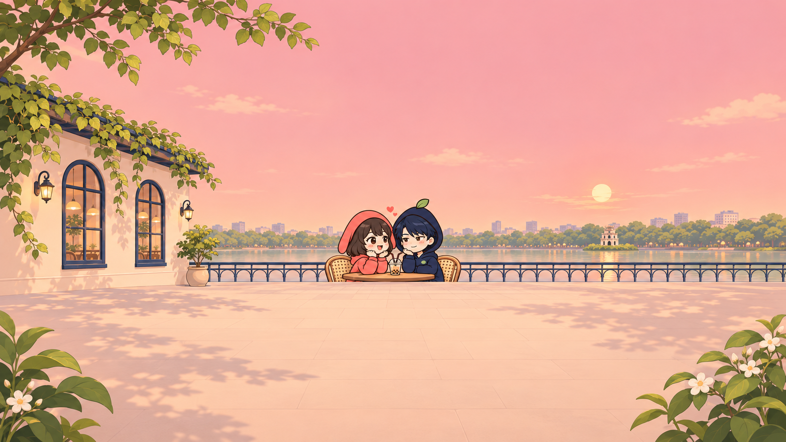

Mochi
Hay dỗi một chút, thương rất nhiều. Với Mochi, một cử chỉ nhỏ cũng có thể trở thành cả một câu chuyện.
Những chuyện yêu nhỏ xíu
Mochi hay dỗi, Bơ hay chiều. Một đôi bạn nhỏ, những tình huống rất quen và một chút dịu dàng cho ngày của bạn.


Hay dỗi một chút, thương rất nhiều. Với Mochi, một cử chỉ nhỏ cũng có thể trở thành cả một câu chuyện.
Ít nói hơn, nhưng luôn để ý. Bơ có cách riêng để biến những lúc hiểu lầm thành một khoảnh khắc gần nhau hơn.
Mochi & Bơ Studio là không gian sáng tạo và chuẩn bị video hoạt hình tiếng Việt. Chúng mình kết hợp công cụ AI với việc biên tập, chọn hình ảnh và kiểm tra nội dung của người làm sáng tạo.
Tìm hiểu công cụ và cách sử dụngTheo dõi tài khoản chính thức @mochiandbovn. Video mới sẽ xuất hiện trên các kênh khi được phát hành.